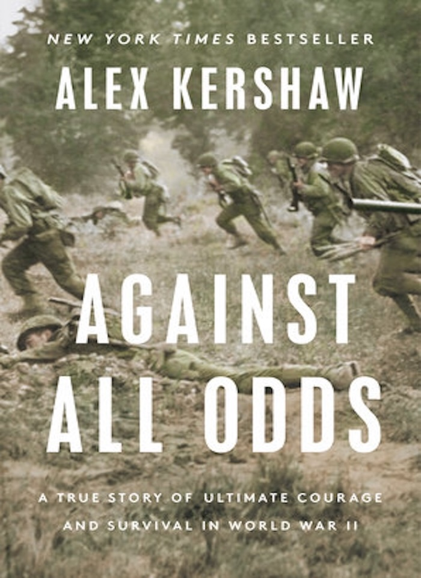
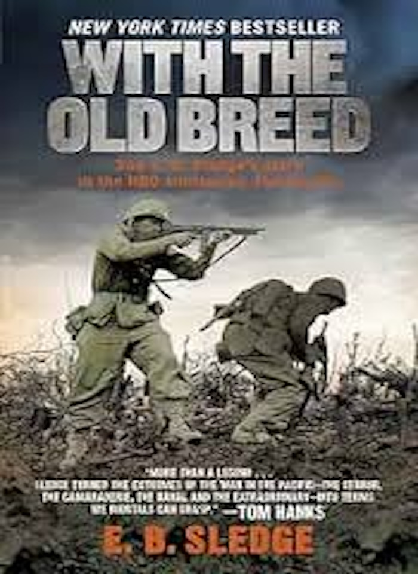

Non-Fiction Books
Band of Brothers By: Stephen E. Ambrose

- Reasons Why I like it:
- A non-fiction book that is filled with facts, but it feels like a thriller
- Not extremely long
- Excellent writing that makes the reader feel like they are witnessing the events themselves
- Explores both the war, and what happened when it ended
| Band of Brothers |
| 336 Pages |
19 Chapters |
| Released in 1992
|
Against All Odds By: Alex Kershaw

- Reasons Why I like it:
- Focuses on people who are not very well known
- Very detail oriented
- Explores both the war, and what happened when it ended
| Against All Odds |
| 368 Pages |
16 Chapters |
| Released in 2022
|
With The Old Breed By: E.B. Sledge

- Reasons Why I like it:
- First Person Account
- Very detail oriented
- Explores the human cost of some of the wars most brutal battles
| With The Old Breed at Peleliu and Okinawa |
| 352 Pages |
15 Chapters |
| Released in 1982
|